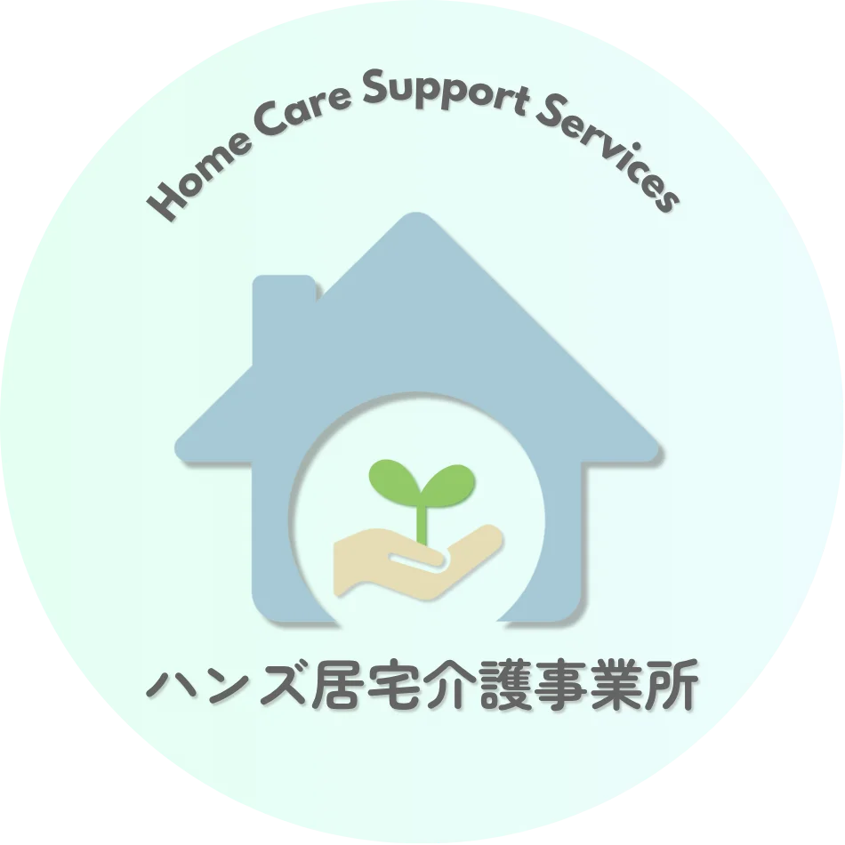

ハンズ居宅介護事業所
ハンズ居宅介護事業所は、障がい者の方々が、自宅で自立した日常生活・社会生活を営めるよう、 相談・助言や生活全般にわたる支援を総合的に行う介護事業所です。
- 在宅での入浴・排泄・食事等の介護、通院介助に対応します。
- 自己判断が制限される方の外出時、危険回避のための支援を行います。
- 重度の肢体不自由の方に対し、在宅介護〜外出支援を総合的に行います。
主なサービス内容
▪ 居宅介護
自宅で、入浴・排泄・食事の介護等を行います。また、病院への通院のための介助を行います。
▪ 行動援護
自己判断が制限されている方が行動する際、危険を回避するために必要な支援、および外出支援を行います。
▪ 重度訪問介護
重度の肢体不自由者で常に介護を必要とする方に、自宅入浴・排泄・食事の介護・外出時の移動支援などを総合的に行います。
～ ご利用までの流れ ～
1
担当相談支援専門員による支援計画の作成
2
サービス内容の決定
3
担当者会議（必要に応じ）
4
利用者ならびにご家族の同意
5
ご利用開始
※ 相談は無料です。
一関市生活支援事業※1について
A. 移動支援（個人）
社会生活上必要不可欠な外出および余暇活動等、社会参加のための外出時の円滑な移動を支援します。
実施日：随時
B. グループ型移動支援（複数）
屋外でのグループワークイベント（映画鑑賞・コンサートなど）への参加を支援します。
実施日：月１回、土曜日に実施
※1 一関市生活支援事業は、一関市からの委託を受けて実施します。支援計画作成後に一関市福祉課窓口への申請が必要となります。